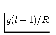

Next: Polygon data
Up: Datasets handled by iGMT
Previous: Datasets handled by iGMT
Contents
Besides pscoast land and sea coverage and shorelines,
the following raster data files are supported:
- ETOPO5 topography:
- The ETOPO5 topography/bathymetry
(NOAA, 1988, available at http://www.ngdc.noaa.gov/) is
supported in combination with the grdraster tool which is (as
psvelomeca) part of the supplementary package that is
available together with the GMT main distribution. The ETOPO5 data
set is about 19MB in i2 binary format.
- ETOPO2 topography:
- The composite ETOPO2 topography/bathymetry
dataset is desribed at http://www.ngdc.noaa.gov/mgg/fliers/01mgg04.html#GriddedF
and supported as a GMT grd file which can be obtained from
http://dss.ucar.edu/datasets/ds759.3/data/.
- ``GTOPO30'' topography:
- The GTOPO30 DEM model (EDC, 1996)
was greatly expanded by Smith and Sandwell (1997). It is supported in the form
suggested by Smith & Sandwell using img2latlongrd.
8 Data and other tools can be found at
http://topex.ucsd.edu/marine_topo/mar_topo.html.
The img format file is 137MB.
- Sea-floor age:
- The sea-floor age data of Müller et al. (1997b) was
published as a GMT grdfile and is used in the form as
available at
http://Omphacite.es.su.oz.au/StaffProfiles/dietmar/Agegrid/agegrid.html.
The data is about 23MB in grd format and roughly 10MB in i2 binary
which could be read by grdraster as ETOPO5 (to do this, change
the corresponding lines in igmt_plotting.tcl). By default,
iGMT expects the global, grid-file version (age data version 1.5).
- Free-air gravity:
- Sea-floor gravity anomalies as published by
Sandwell and Smith (1997) are used as a grdfile as found at
http://topex.ucsd.edu/marine_grav/mar_grav.html.
As GTOPO30, this file is 137MB big.
- Geoid:
- iGMT supports plotting the geoid and comes with an
adequate colormap. As an example, we evaluated the spherical
harmonic coefficients of the EGM360 model of Rapp et al. (1996,1991)
from order 2 to 360, corrected for the hydrostatic shape of the
Earth (Nakiboglu, 1982), and included them in quarter arc minute
resolution as a GMT grd-file in our raster data set. Alternatively,
we also offer the OSU91A model of Rapp et al. (1991) as a ``typical''
geoid representation grd-file. You can download both files from our
web site.
- Global free-air gravity:
- Derived from the EGM360 model of
Rapp et al. (1996,1991) from order 2 to 360, and included in quarter
arc minute resolution as a GMT grd-file in our raster data set.
Obtained from the file above by multiplying the spherical harmonic
coefficients by  where is gravitational acceleration,
the radius of the Earth and the order of the spherical
harmonics.
You can download this file from our web site.
- Sediment thickness:
- Sediment thickness is important for
seismological studies and the comparison between half-space cooling
model prediction and bathymetry. We have included a data handling
routines for the Laske and Masters (1997) dataset. The data itself is
available as a grd-file on our web site.
- GSHAP peak ground acceleration
- The Global Seismic Hazard
Assessment Program (GSHAP, Giardini et al., 2000,1999) has compiled a
world-wide 6 minute on-land dataset of estimated peak ground
accelerations that can be expected with a 10% probability within
the next 50 years (see http://seismo.ethz.ch/gshap/global/global.html). We provide a
plotting facility for this type of data, the grid file can be
obtained from
http://seismo.ethz.ch/gshap/global/caution.html.
- Custom data:
- You can choose an arbitrary GMT grd file to be
plotted as the base data layer and provide your own colormap, too.
Next: Polygon data
Up: Datasets handled by iGMT
Previous: Datasets handled by iGMT
Contents
Thorsten Becker
2004-03-04